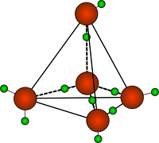
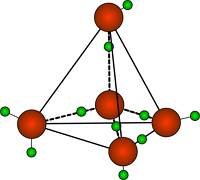

Критические параметры водяного пара и его особенности
Таблица термодинамических свойств воды, водяного пара
Таблица термодинамических свойств воды, водяного пара. Диаграммы "P-V" и "I-S"
Физические свойства.
Чистая вода представляет собой бесцветную прозрачную
жидкость без запаха и вкуса.
Она существует в трех агрегатных состояниях твердое — лед,
жидкое и газообразное — водяной пар.
При О °С твердая и жидкая фазы находятся в
состоянии динамического равновесия, поэтому температура плавления льда равна 0 °С.
При
100 °С в равновесии находятся жидкая и газообразная фазы.
Температура кипения воды равна
100 °С.
При - -4°С она имеет наибольшую плотность, равную 1 г/см .
Выше или ниже этой
температуры плотность воды меньше 1 г/см .
Эта особенность отличает воду от всех других
веществ, плотность которых с понижением температуры увеличивается.
При переходе воды из
жидкого в твердое состояние происходит увеличение объема и уменьшение плотности из 92
объемов жидкой воды образуется 100 объемов льда.
Молекула воды полярна и построена по
типу треугольника, в вершине которого находится электроотрицательный атом кислорода, а в
углах оснований — водород.
Валентный угол равен 104,5°
 

ТЕМПЕРАТУРА КИПЕНИЯ, температура, при которой вещество переходит из одного состояния (фазы) в другое, т. е. из жидкости в пар или газ. Температура кипения возрастает при увеличении внешнего давления и понижается при его уменьшении. Обычно ее измеряют при стандартном давлении в 1 атмосферу (760 мм рт. ст.) Температура кипения воды при стандартном давлении составляет 100 °С.
Критическая точка воды
Критической точкой воды называется ее состояние при
определенном соотношении давления и температуры, когда ее свойства одинаковы в газообразном
и жидком состоянии (газообразной и жидкой фазе).
Критическая точка воды: 374°C, 22,064
MПа.
Водяной пар широко используют в качестве рабочего тела в поршневых паровых машинах и паровых
турбинах, а также как теплоноситель в теплообменных аппаратах.
Поэтому изучение свойств
водяного пара занимает в термодинамике важное место.
Пар получают двумя способами: испарением и кипением.
Испарением называется процесс парообразования, происходящий только с поверхности
жидкости.
Испарение идет при любой температуре, причем интенсивность его увеличивается с
повышением
температуры.
Кипение интенсивный переход жидкости в пар, протекающий во всем объеме. Кипение
происходит
при строго определенной для каждой жидкости температуре, которая зависит от давления Чем
выше давление, тем соответственно выше температура, при которой кипит жидкость. Температура
кипения остается постоянной, пока вся жидкость не превратится в пар.
Свойства водяного пара
Территория рекламы
Водяной пар широко используют в качестве рабочего тела в поршневых паровых машинах и паровых
турбинах, а также как теплоноситель в теплообменных аппаратах. Поэтому изучение свойств
водяного пара занимает в термодинамике важное место.
Пар получают двумя способами: испарением и кипением.
Испарением называется процесс парообразования, происходящий только с поверхности жидкости.
Испарение идет при любой температуре, причем интенсивность его увеличивается с повышением
температуры.
Кипение интенсивный переход жидкости в пар, протекающий во всем объеме. Кипение происходит
при строго определенной для каждой жидкости температуре, которая зависит от давления Чем
выше давление, тем соответственно выше температура, при которой кипит жидкость. Температура
кипения остается постоянной, пока вся жидкость не превратится в пар.
Пар, находящийся в равновесии со своей жидкостью, называется насыщенным. При равновесии
устанавливается постоянная плотность пара, которая отвечает определенному давлению. Это
давление называют упругостью насыщенного пара. Упругость насыщенного пара возрастает с
повышением температуры. Состояние насыщенного пара очень неустойчиво. Малейшее изменение
условий, в которых он находится, приводит либо к конденсации пара, либо к дополнительному
парообразованию.
Насыщенный пар может быть сухим и влажным. Пар, не содержащий в своем составе частиц
жидкости, называют сухим насыщенным паром.
Влажный насыщенный пар представляет собой механическую смесь сухого пара и мельчайших частиц
жидкости.
Количество теплоты, необходимое для превращения жидкости в пар при неизменной температуре,
называют теплотой парообразования. С увеличением давления теплота парообразования
уменьшается.
Если к сухому насыщенному пару подводить теплоту при постоянном давлении, то температура его
будет повышаться, объем увеличится и сухой насыщенный пар перейдет в состояние перегретого.
Степень перегрева пара ∆t определяют разностью температур перегретого tП и насыщенного tH
паров:
∆t = tП-tH
Чем выше температура перегрева пара, тем ближе он по своим свойствам к идеальному газу.
Водяной пар получают в паровых котлах различных размеров и типов. Так как экономичность
тепловых двигателей повышается с увеличением температуры парообразования. С увеличением
давления теплота парообразования уменьшается.
Если к сухому насыщенному пару подводить теплоту при постоянном давлении, то температура его
будет повышаться, объем увеличится и сухой насыщенный пар перейдет в состояние перегретого.
Степень перегрева пара ∆t определяют разностью температур перегретого tП и насыщенного tH
паров:
∆t = tП-tH
Чем выше температура перегрева пара, тем ближе он по своим свойствам к идеальному газу.
Водяной пар получают в паровых котлах различных размеров и типов. Так как экономичность
тепловых двигателей повышается с увеличением температуры горячего источника, в паросиловых
установках всегда используют перегретый пар. В настоящее время в нашей стране освоено
изготовление паровых котлов большой производительности с температурой перегретого пара до
585°С. Перегрев пара осуществляется в пароперегревателях, в которые пар поступает из котла
во влажном насыщенном состоянии. В пароперегревателях пар сначала подсушивается, т. е. из
него полностью удаляется влага, а затем перегревается до заданной температуры. Промышленный
технологический пар следует рассматривать как реальный газ, который подчиняется уравнению
Ван-дер-Ваальса.
Для каждого вещества существует так называемое критическое состояние, которое
характеризуется критическим давлением рк и критической температурой tK. В этом состоянии
плотность жидкости и ее насыщенного пара становятся одинаковыми; исчезает различие между
жидкостью и ее насыщенным паром. Вещество, находящееся в критическом состоянии, является
однофазным. Оно обладает свойствами газообразных и жидких тел одновременно. При температуре
выше критической никаким повышением давления перегретый пар не может быть обращен в
жидкость.